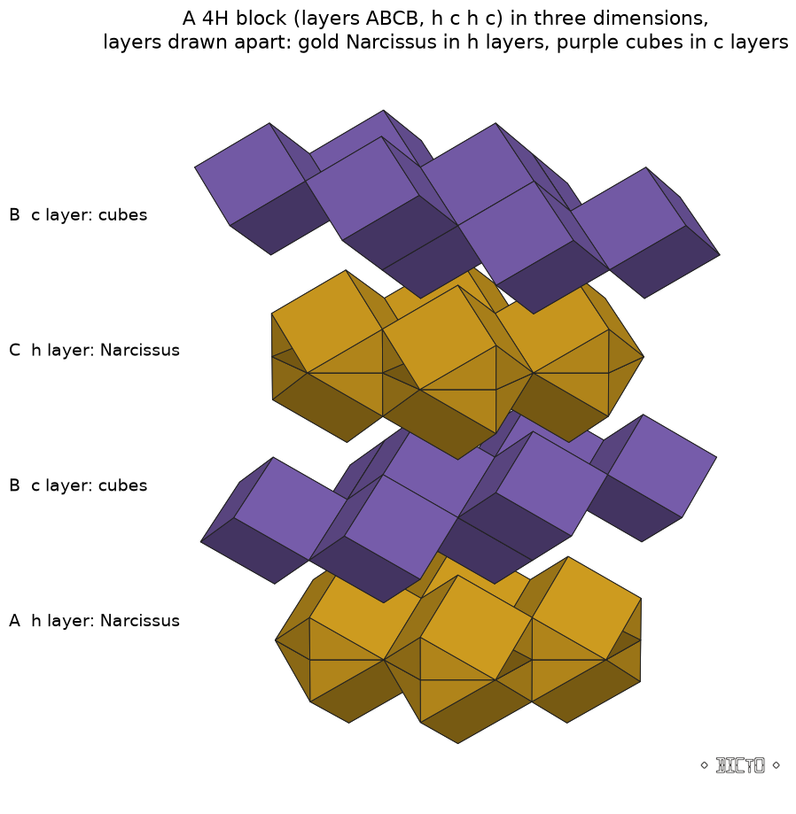
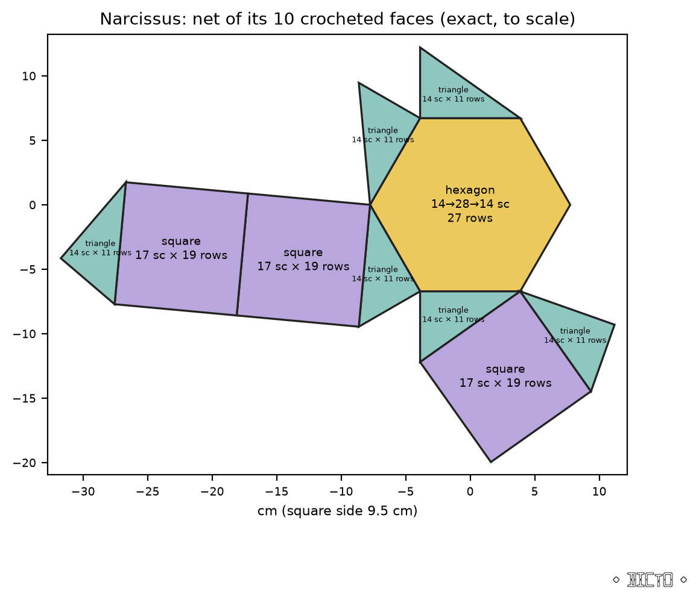
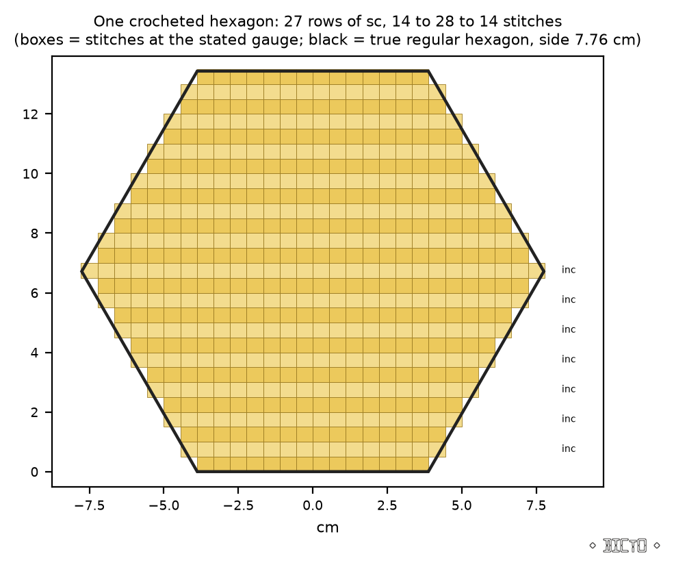

The solid cells crocheted and stacked: closed crocheted Narcissus and cubes that fit face to face into every close-packed stacking
The Crocheted HexOct builds the crystal in three dimensions from its own solid pieces. Each cell is a closed, solid crocheted polyhedron: a shell of crochet over a firm folded core. The cells fit whole face to whole face and stack into c and h layers, so the build is the stacking itself, not a flat fabric and not a pattern on a surface. Where the knitted lattice of Parts 1–3 makes the edges of the cells (sheets and links, with empty tetrahedra and octahedra between them), the crochet build makes the cells as solids.
The cells are the HexOct pieces at the end of the weight walk of #75 (λ = 3/8). In an h layer they are Narcissus (DICTO's name, #98): a ten-faced solid with one regular hexagon, three squares and six right triangles, which is its own mirror image. In a c layer they are cubes. There are two cells per ball in every layer, and each cell has volume √2/4 a³, half of a ball's cell (a the ball spacing).
| Layer | Cell | Faces | Cells per ball | The two cells of one ball |
|---|---|---|---|---|
| h | Narcissus (#98) | 1 regular hexagon, 3 squares, 6 right triangles; 10 corners | 2 | joined on their hexagons: one convex solid with 12 faces and 11 corners, the twisted cube of #86 (checked) |
| c | cube | 6 squares | 2 | joined on a square: a brick |
Our check: scripts/faces.py, data/faces.json, exact With a = 1 the sides of Narcissus are √(1/2), √(1/3) and √(1/6); its dihedral angles are 90°, 120° and 135° only, those of the cube 90°. Each stacking was checked on a periodic box of 3 × 3 balls × one period: the volumes add up, 20 000 random points are each covered exactly once, and every face is matched by one whole face.
| Stacking | Layers | c/h | Cells | Points covered once | Faces matched whole | Contacts between layers |
|---|---|---|---|---|---|---|
| 3C | ABC | ccc | 54 | 20 000 / 20 000 | 162 / 162 | squares (cube–cube) |
| 2H | AB | hh | 36 | 20 000 / 20 000 | 180 / 180 | squares (Narcissus–Narcissus) |
| 4H | ABCB | hchc | 72 | 20 000 / 20 000 | 288 / 288 | squares (Narcissus–cube) |
| 6H | ABCACB | hcchcc | 108 | 20 000 / 20 000 | 396 / 396 | squares |
| 9R | ABACACBCB | hhchhchhc | 162 | 20 000 / 20 000 | 702 / 702 | squares |
Within an h layer, Narcissus meet Narcissus on hexagons and on triangles; within a c layer, cubes meet on squares; across every layer boundary, in every stacking, the contact is a square of side L. For the maker this means that one stacking differs from another only in which layers are made of Narcissus pairs and which of cube pairs, and where they sit, and that every layer meets the next on the same square seam.

This section summarises the pattern. The complete pattern, for a maker to follow, is the Appendix: materials, abbreviations, the gauge swatch, row-by-row recipes with stitch charts, the cores, the sewing order with lettered edges, the twisted cube and the stacking, test piece 1, finishing, and four core templates printed at full size. Nothing has yet been crocheted from it.
Gauge. Single crochet (UK double crochet) in DK cotton on a 4.0 mm hook: 18 stitches and 20 rows to 10 cm. Swatch 25 stitches × 25 rows first. For another gauge, scripts/pattern.py of the study chooses the face size and recomputes every count and check. Scale. Square side L = 9.5 cm, so the ball spacing is a = 13.4 cm; of the sizes 6 to 10 cm this one gives the best fit in whole stitches. Abbreviations: ch chain; sc single crochet (UK dc); sc2tog, sc3tog single crochet 2 or 3 together (UK dc2tog, dc3tog); 2 sc in st, an increase. Every row starts with ch 1, turn (not counted as a stitch).
| Face | Narcissus | cube | Pattern |
|---|---|---|---|
| Square | 3 | 6 | Ch 18. Row 1: sc in 2nd ch from hook and in each ch (17 sc). Rows 2–19: sc in each st. Fasten off, leaving a 40 cm tail. |
| Hexagon | 1 | – | Ch 15. Row 1: sc in 2nd ch from hook and across (14 sc). Rows 2, 4, …, 14: 2 sc in first st, sc to last st, 2 sc in last st (+2 each; row 14 = 28 sc). Rows 3–13 odd: sc across. Rows 15, 17, …, 27: sc2tog, sc to last 2 sts, sc2tog (−2 each; row 27 = 14 sc). Rows 16–26 even: sc across. 27 rows. |
| Right triangle | 6 | – | Ch 15. Row 1: sc in 2nd ch from hook and across (14 sc). Mark the first stitch of row 1: that edge stays straight (the right angle). Rows 2–11: sc across, with every decrease at the unmarked, slanted edge: sc2tog in rows 2, 3, 4, 6, 7, 9, 10 and sc3tog in rows 5, 8, 11. Stitch counts 14, 13, 12, 11, 9, 8, 7, 5, 4, 3, 1. Fasten off. Turn three of the six over before sewing: single crochet looks alike on both sides, so one pattern gives both hands. |
Our check: scripts/pattern.py, data/pattern.json Each length below is computed back from the stitch counts at the gauge.
| Side | True (cm) | From the stitches (cm) | Error |
|---|---|---|---|
| square, width / height | 9.50 | 9.44 / 9.50 | −0.58 % / 0.00 % |
| hexagon, top and bottom / slanted sides | 7.76 | 7.78 / 7.79 | +0.27 % / +0.43 % |
| triangle, long leg | 7.76 | 7.78 | +0.27 % |
| triangle, short leg | 5.48 | 5.50 | +0.28 % |
| triangle, hypotenuse | 9.50 | 9.53 | +0.27 % |
The hexagon's corner comes out at 119.95° (true 120°) and the triangle's acute angle at the long leg at 35.27° (true 35.26°). The true ratios hold: the hexagon side equals the triangle's long leg, and the triangle's hypotenuse equals the square side. The edges are stepped by single stitches; the seams hide the steps.


Assembly (the net has 18 edges, all checked). (1) Sew the six triangles round the hexagon by their long legs (6 seams), alternating the turned-over ones. (2) Sew neighbouring triangles together along their short legs (3 seams); the piece now cups. (3) Sew the three squares into an open cube corner (3 seams). (4) Insert the core (§3) and close by sewing the square rims to the six triangle hypotenuses (6 seams). Seams are whip stitch with the tails, wrong sides together and pulled snug, so that the faces stay flat for contact (Appendix §A7). The cube is six squares sewn the same way (12 seams). Yarn: Narcissus has 555 cm² of face and the cube 542 cm²; one cell takes about 5.6 times the weight of a 10 × 10 cm swatch, plus the seams.
A stuffed crochet shell takes its final shape from the stuffing, as Edelstein, Peleg, Itzhaky and Ben-Chen describe in their computational design of amigurumi (AmiGo, [8]); its faces bulge, and bulging faces cannot meet face to face. So each cell is crocheted over a firm core: a polyhedron folded from card or from PET sheet (bottle plastic), cut from the same net (Figure 2) slightly undersize to allow for the thickness of the fabric; the templates of the Appendix are at 95.8 % of full size, for fabric about 4 mm thick. The folds of Narcissus are 90°, 120° and 135° only, those of the cube 90°, so a core can be scored and folded to them exactly. How much undersize the core must be depends on the yarn; test piece 1 measures it. Light stuffing between core and skin is optional.
| Property | Knitting | Crochet | Source |
|---|---|---|---|
| Live loops while working | the whole row is held open on the needles | one loop on the hook; each stitch is finished and anchored | Madill [13] ("one live stitch at a time"); Seitz et al. [9] ("always one loop around the hook"); Karp [14] |
| Where a new stitch can attach | in the grid of courses and wales | "nearly any place on the crochet fabric", flat or three-dimensional | Markande & Matsumoto [15]; Seitz et al. [9] |
| Closed 3D shells | by rounds, and by splitting and rejoining tubes | spiral rounds with increases and decreases; seamless builds on ribbon graphs; stuffed shells; joined polyhedral faces | Dong [7]; Seitz et al. [9]; Edelstein et al. [8]; Gilbank [5] |
| Stretch | can stretch over 100 %; elasticity set by the stitch topology | stitches "locked in place", less stretch | Markande & Matsumoto [15]; Singal et al. [16]; Madill [13] |
| Thickness, yarn | thinner, less yarn | thicker, "almost always" more yarn | Madill [13] |
| Tensile behaviour | reference (knitted) | higher loads at larger strain; stiffer as a composite reinforcement; varies with the crocheter | Storck, Steenbock, Dotter, Funke & Ehrmann [17] (abstract only) |
| Machines | industrial knitting machines | no industrial crochet machine; a one-sided prototype (2023) | Seitz et al. [9]; Storck, Feldmann & Kyosev [18] |
What the sources support, at its true strength. Crochet builds closed polyhedral shells from flat faces joined at any edge; it holds a shape better than knitting, being denser and less stretchy; and it can grow in any direction from a single live loop. These are the properties a space-filling cell needs. No source we checked shows crocheted cells that fit together to fill space, so whether crocheted Narcissus and cubes hold their angles well enough to stack face to face is an open practical question; the cores (§3) and test piece 1 (§4) answer it. Knitting is not ruled out in three dimensions: knitted surfaces of every topological type exist (belcastro [19]; record only seen), and the knitted lattice of Part 1 is itself layered through its thickness. But knitting is worked as a sheet, and for solid cells the sources place the advantage with crochet.
Both builds carry the same stacking, written in c and h. The knitted lattice (Parts 1–3) makes the sheets and links whose empty cells are the HexOct pieces at λ = −1/8, the tetrahedra and octahedra of the octet; the crochet build makes the cells themselves as solids, the HexOct pieces at λ = 3/8. Parts 2 and 3 compute the mechanics and comfort of the idealised strut-and-sheet lattice; they do not describe the solid-cell build, whose mechanics are those of stacked blocks seamed on squares and are not modelled here.
Crochet has carried mathematical form since Daina Taimiņa crocheted the first hyperbolic plane in 1997 [1, 2]; her Bridges paper of 2022 also notes knitted models from 1885 [2]. Hinke Osinga and Bernd Krauskopf crocheted the Lorenz manifold, 25,511 stitches from computed instructions, adding bands with points added or removed (increases and decreases) and holding the finished surface with steel wires [3]; their later "How to crochet a space-filling pancake" is a surface spreading through space, not a tiling by solids [4]. June Gilbank's (PlanetJune) Polyhedral Balls make all five Platonic solids from crocheted faces joined by crochet and stuffed, with "relatively flat" sides and no inserts [5]. L. Magrics crochets on Platonic-solid scaffolds [6], and S. Dong crochets surfaces from ribbon graphs [7]. Edelstein, Peleg, Itzhaky and Ben-Chen design amigurumi shells by computer [8], and Seitz, Lincke, Rein and Hirschfeld give a pattern language for 3D crochet, in which increases and decreases are "mainly responsible for reaching any shape" [9]. Margaret and Christine Wertheim's Crochet Coral Reef (Institute For Figuring, from 2005) builds on Taimiņa's method [10]. sarah-marie belcastro and Carolyn Yackel collected mathematical needlework, with a chapter on self-similar crochet [11]; Baker and Goldstine crochet plane tilings on a torus of beads [12]. Crocheted space-filling cells, 3D lattices or foams: none found in the searches listed below.
Sources checked. DICTO's reference library (manifest, reading list, Bridges folder; full-text search for crochet, amigurumi, Taimiņa, knitting): no crochet source; only the knitting sources already cited in Part 1. Opened on the web: the sources above, and Perlego and Routledge contents pages for [11], the Crossref record of [16] (title and authors), and the Loopholes post list (author and date of [14]). Could not be opened: doaj.org, journals.sagepub.com, hsbi.de, nature.com, textiles.cs.cmu.edu, Europe PMC, the Ravelry listing of Crafting by Concepts. Web queries: Osinga Krauskopf Lorenz crochet stitches; Taimiņa Bridges 2022; AmiGo amigurumi; crochet by machine; the two belcastro–Yackel contents; IFF coral reef 2005; belcastro "Every topological surface can be knit"; Markande Matsumoto knotty knits; Singal 2024; crocheted vs knitted fabric tensile; Bridges crocheted polyhedra and Platonic solids; Baker Goldstine bead crochet; crochet space-filling polyhedra, truncated octahedron, rhombic dodecahedron (nothing); Seitz crochet; Guo et al. crochet stitch meshes (listing only, not used); Storck crocheted fabrics; crochet uses more yarn; crochet 3D lattice, foam, Kelvin cells (nothing). Scripts, data and figures: study folder 2026-11-15-hexoct-crochet, research branch of the kaleidohedra repository.